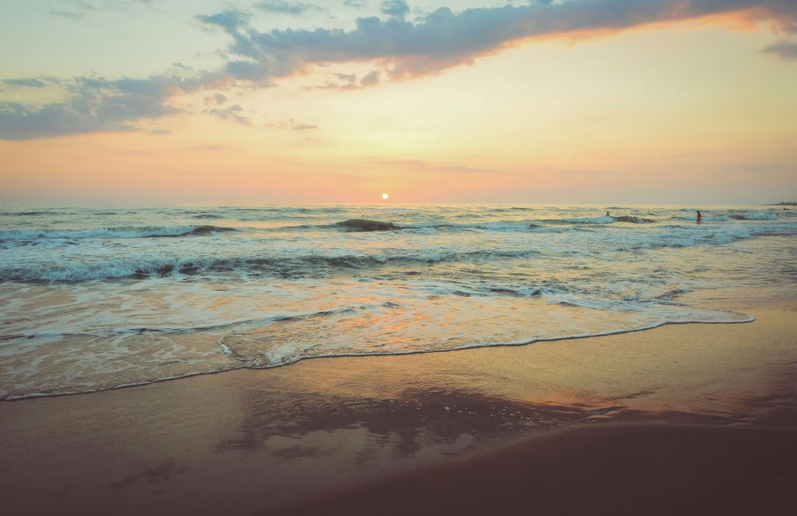

<ion-menu contentId="main-content">
  <ion-header>
    <ion-toolbar>
      <ion-title>Menu Content</ion-title>
    </ion-toolbar>
  </ion-header>
  <ion-content class="ion-padding">This is the menu content.</ion-content>
</ion-menu>
<div class="ion-page" id="main-content">
  <ion-header>
    <ion-toolbar>
      <ion-buttons slot="start">
        <ion-menu-button></ion-menu-button>
      </ion-buttons>
      <ion-title>Find Places</ion-title>
    </ion-toolbar>
  </ion-header>

<ion-header [translucent]="true">
  <!-- <ion-toolbar>
    <ion-title>Find Places</ion-title>
  </ion-toolbar> -->
</ion-header>

<ion-content [fullscreen]="true">
  <!-- <ion-header collapse="condense">
    <ion-toolbar>
      <ion-title size="large">Find Places</ion-title>
    </ion-toolbar> -->
  <!-- </ion-header> -->
  <ion-content class="ion-padding">
    
    <button class="clickable-box" href="">Brunei Muara</button>
    <button class="clickable-box" href="">Tutong</button>
    <button class="clickable-box" href="">Temburong</button>
    <button class="clickable-box" href="">Kuala Belait</button>
  </ion-content>
</ion-content>
</div>


  
  


